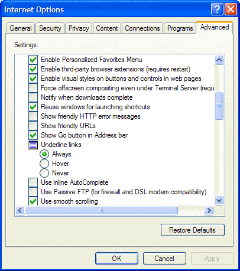
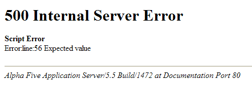

Configuring Internet Explorer
When you are building pages to be served up by the Application Server, and if you are using Internet Explorer, you will want to see error messages that identify pages lines with syntax errors. In Internet Explorer, select Tools > Internet Options > Advanced and clear Show friendly HTTP error messages.

The result is that you (the developer) will get error messages that look like this.

See Also
Status Codes, Request Variable, Sessions
Supported By
Alpha Five Version 6 and Above
Limitations
Web publishing applications only.